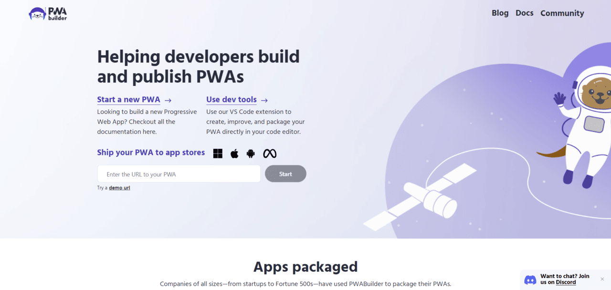

PWAs & Their Features
A PWA (Progressive Web App) is an app that’s built using web technologies (e.g. HTML, CSS, and JavaScript) and provides an experience and features that mobile apps have. It can run on multiple platforms and devices and be installed directly on the device. With that, this brings a variety of features for your website:
Can operate while offline
These apps work regardless if you’re offline or have unreliable/slow internet. With the help of service workers, data gets stored offline and retrieved from the local cache.
Using device features (e.g. Camera, GPS, or fingerprint scanner)
Device features can enhance the user experience and make it seem like the PWA is a mobile app.
Automatic updates
The user doesn’t need to update the app like they do with apps on the Google Play Store or App Store. The instant implementation of changes only requires uploading new files on the app's server. With that, the user will always have the latest version of the PWA.
Usage of HTTPS protocol
PWA requires the usage of the HTTPS protocol. However, this means the app is more secure with encrypted data and making it more difficult for a hacker to change or decrypt. Plus, Google ranks apps and websites with HTTPS higher than those without it.
Instant Loading Time
PWAs were made to load quickly and efficiently for all users. This is also possible thanks to service workers who cache crucial resources like HTML, CSS, and JavaScript files. So that when the user visits the site again, those files load from the cache instead of fetching copies from the server.
Push Notifications
This helps keep users engaged, even if they don’t have the browser window open. These notifications can be sent based on the user’s behavior or preferences and users can opt in or out of receiving them.
Known Examples
There are tons of PWAs, with categories like retail, news, social media, and traveling. Below are some of the well-known businesses that have PWAs for their user base and have succeeded with them.
Starbucks
Starbucks made a PWA to boost user engagement by offering loyalty programs and an easier ordering process. Other features include custom ordering, store availability, delivery details, and an app menu. You can also customize drinks like their size, add-ons, and shot options. There’s also nutrition information, ingredients, and allergen sections.
Target
Target saw users begin their experience on a mobile device before switching to a desktop to purchase. With that, they created a PWA, and since then, it’s led to more users and transactions with features like add-to-cart and fast-loading images regardless of size.
Walmart
Walmart’s PWA provides online purchases, pickup/delivery options, push notifications, and has a geo-tracking feature that monitors best-selling items in the user’s area. With these features, Walmart can provide its customers with great deals and a smooth experience.
The Washington Post
This PWA responds to concerns over slow loading times on the post’s old mobile app. With the improvement in load times, there’s been an increase in retention rate and longer reading. This is also one of the most responsive PWAs out there with more than 1,000 articles published daily.
The Weather Channel
The Weather Channel’s PWA helps users by providing 60+ languages, search functionality, push notifications, and provides for users who don’t have reliable connections or advanced smartphones. There has also been an improvement in page loading speed through its app according to Google.
Instagram offers both a PWA and its native app. With its PWA, you can access the same features from the desktop and mobile apps and get the same user experience with instant loading times, push notifications, and fast responses.
Pros & Cons
The Pros
Low on data usage
PWAs are much smaller than mobile apps, so they require less bandwidth thanks to the caching explained above. This helps those on limited data plans who can’t connect to a reliable Wi-Fi network.
App Store Independent
There’s no need to place these apps on the App Store or Google Play Store. This frees developers from fees and allows them to create any app they want without being subject to an app store’s policies and restrictions.
Better engagement with users
With more platforms supported, there are higher conversion rates and users are likely to stay longer, improving user satisfaction and experience.
Cost-Effective
These are more budget-friendly to develop and maintain since they use a single codebase that works on multiple devices. With that, this makes them easier to make and maintain than mobile apps.
Visibility by search engines
Google indexes PWAs and makes them accessible online. So you can optimize your search engine ranking as you would with a website to reach customers with organic searching and make your business more credible.
The Cons
Limited offline use
While you can use PWAs offline, they still depend on web browser connection. If you access the PWA without an internet connection, you can still access and navigate through the cached pages, but you can’t experience the entire functionality.
Issues with compatibility for iOS
You can access PWAs with iOS 11.3 or newer. However, this leaves older devices out of the picture. In addition, Apple doesn’t allow PWAs features like Touch ID, Face ID, Bluetooth, or battery information.
Issues with legacy devices
Older mobile devices with outdated browsers miss out on PWAs too. This may lead to some customer complaints for some businesses.
Can’t do everything mobile apps can do
While PWAs are like mobile apps, they have limitations, since they are written in JavaScript. Meaning they are less efficient in battery and don’t perform as well as native apps. But as mentioned above, they may not have access to all the features that native apps provide.
Getting Started & The Possibilities
You can achieve creating a PWA in different ways, depending on your objectives. But to make a unique, optimized, and well-made PWA, you need to put a lot of investment into it. Microsoft’s PWA Builder can help get a basic PWA going.
There are some basic steps to get started:
- Obtaining an SSL certificate to place on your web server.
- Developing an app shell.
- Verifying if the browser supports service workers.
- Creating service workers.
- Adding push notifications and web app manifest.
- Setting up an install prompt.
- Testing the app and its performance.
- Launching the app.
But to do this task well, you’ll need a team of very-skilled frontend developers who can make complex web apps. You’ll also need designers who understand native app user experience and can apply it well online.
The cost to build depends on the complexity of the app. If you’re looking to convert a site into a PWA, expert Andrew Buck roughly estimated that it can take at least a few months and cost $20,000 to $50,000 if you want to get a great result.
Again, this depends on the complexity required and even simple PWAs can serve great to users. Not only that, they can also pay for themselves in the long run with the benefits provided.
You can also turn a WordPress site into a PWA with some WordPress plugins.
You might also benefit from building both PWAs and native apps. That way, you can create a PWA to serve your mobile website users and a native app to serve mobile users who keep returning to your business.
But a PWA is not a replacement for native apps, but an app that can provide a better web experience for your users and help benefit businesses overall. In general, this brings great possibilities for businesses to present themselves in the mobile world.